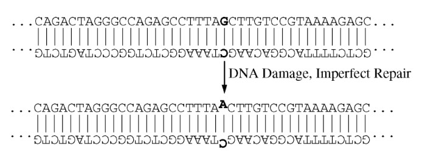

Mutations in DNA are usually caused by chemical or radiation damage to DNA molecules, followed by imperfect repair of the damage. Immediately after this kind of imperfect repair, there may be a mismatched base pair in the DNA. The illustration below shows an example of a mismatch, with the relevant pair bases in bold.

Which of the following best represents the DNA of the two daughter cells produced when a bacterial cell with this particular mismatch replicates its DNA and divides?